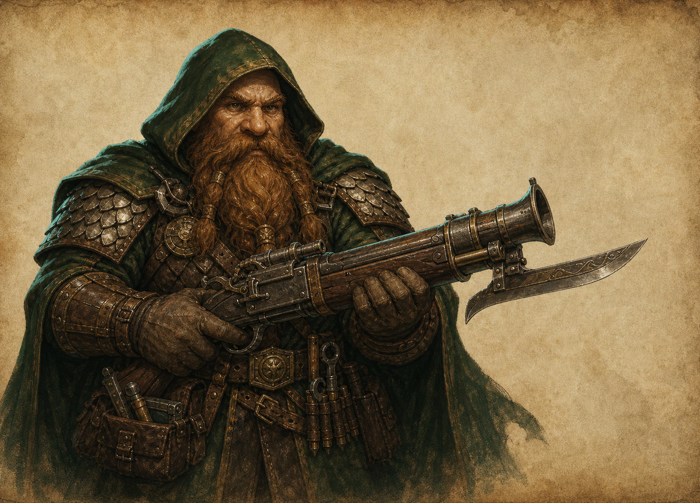

Расы / Народ
Дворфы
Мастера оружия, шахт и огнестрельных технологий.

История
Дворфы вошли в историю как народ мастерских, шахт и долговечных союзов. Их изделия часто переживают государства.
Биология
Живут около 120 лет, физически крепки и лучше большинства народов переносят тяжелый труд в шахтах и кузнях.
Культура
Культура дворфов уважает мастерство, прямое слово и долг перед работой. Недоделанная вещь считается почти личным позором.
Архитектура
Их архитектура плотная, каменная, инженерная: низкие своды, укрепленные мастерские, вентиляционные шахты и склады.
Военное дело
Дворфы ценят огнестрельное оружие, тяжелые арбалеты, укрепления и небольшие отряды, которые знают местность лучше врага.
Отношение к магии
Магия принимается, если ее можно встроить в механизм, сплав, защиту или производство. Чистая теория вызывает меньше доверия.
Отношение к другим расам
С людьми они торгуют, с эльфами спорят о качестве, Маркору продают оружие осторожно, а Велтиру - дорого.
Известные личности
Известны оружейники, мастера рудных печей, командиры шахтных рот и создатели экспериментального оружия.
Интересные факты
Хороший дворфийский инструмент может стоить дороже лошади и служить дольше династии.